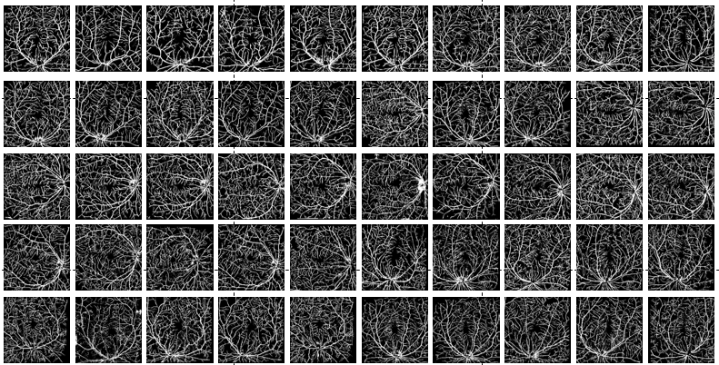

REVIO: A Wide-field OCT-Angiography Retinal Vessel Segmentation Dataset and New Model
--------------------------------------------------------------------------------------------------------------------------------------------
A novel Spatial Domain and Frequency Domain Network (SFNet) for OCTA vessel segmentation
Permission to use copy, or modify this dataset, tool and codes for educational and research purposes.
E-mail : lisienkyanbis@163.com
--------------------------------------------------------------------------------------------------------------------------------------------
1. Dataset Description
Our dataset is based on the OCTA technique, by using the SS-OCT system to obtain the eye images of 50 people of different age groups.
All retinal vessel images are annotated by experienced doctors. To protect the privacy of people,
the information of retinal vessel images is anonymous during the construction of the optic disc and macula dataset.
According to the characteristics of OCTA images, we can examine the choroidal vessels on the basis of OCTA images.
This dataset will be soon released publicly. The ground-truth samples were manually made by our experts, which are aided with our self-developed software.
The data-set is captured by wide-field OCTA(WF-OCTA). The optic disc and macula dataset contains pixel-level labels and image-level labels of 288 $\times$ 288 pixels.
This dataset will be soon released publicly. The ground-truth samples were manually made by our experts, which are aided with our self-developed software.
2.1 The key code of our approach (SFNet) for demo can be downloaded here (Pytorch).
2.2 The code of U-Net for demo can be downloaded here (Pytorch).
--------------------------------------------------------------------------------------------------------------------------------------------
Figure 1 Some samples of the REVIO dataset
The Original Image
The Ground-truth 
--------------------------------------------------------------------------------------------------------------------------------------------
Figure shows the detailed schematic diagram of SS‐OCT system. The light from the swept light source passes through the beam splitter and enters reference and sample arms, respectively. The light power from the swept source was split 90% into the sample arm and 10% into the reference arm by a fiber coupler. In the sample arm, the light from swept source component reaches retina through a fiber coupler and collimation lens. In the reference arm, the light passes through a collimator and a focusing lens and a mirror reflects the light beam. The light from the reference and sample arms generates interference in a fiber coupler with a ratio of 50:50, and then was redirected toward a balance detector. Electronic signals from the detector were input into the computer.